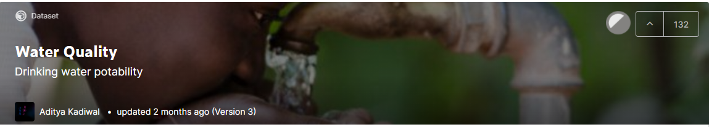
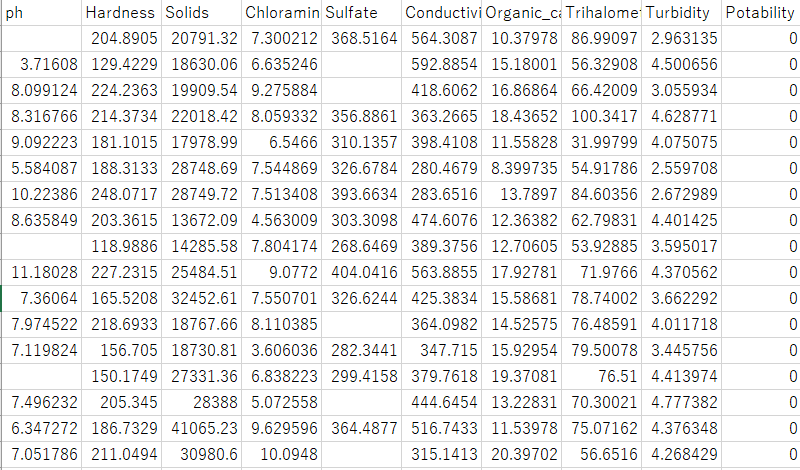

資料可視化 期末專題
資料集來源
資料來自 https://www.kaggle.com/adityakadiwal/water-potability
資料集的內容
文件中包含3276個不同水體的水質指標，數據完整的資料共2011筆
pH值：PH值是評價水酸鹼平衡的重要參數。 它也是水狀態酸性或鹼性狀況的指標。 世衛組織建議的最大允許 pH 值範圍為 6.5 至 8.5。
硬度：硬度主要由鈣和鎂鹽引起。硬度定義為水沉澱由鈣和鎂引起的肥皂的能力。
固體（總溶解固體 - TDS）：水具有溶解多種無機和一些有機礦物質或鹽的能力。TDS 值高的水表明水是高度礦化的。用於飲用的水，TDS 的理想限量為 500 毫克/升，最大限量為 1000 毫克/升。
氯胺：氯和氯胺是公共供水系統中使用的主要消毒劑。飲用水中氯含量高達每昇4毫克（毫克/昇或百萬分之四（ppm））被認為是安全的。
硫酸鹽：硫酸鹽是天然存在的物質，存在於礦物、土壤和岩石中。海水中的硫酸鹽濃度約為每升 2,700 毫克 (mg/L)。大多數淡水供應中的濃度範圍為 3 至 30 毫克/升。
電導率：水中溶解固體的量決定了電導率。根據WHO標準，EC值不應超過400 μS/cm。
有機碳：TOC 是衡量純水中有機化合物中碳總量的指標。根據美國環保署的規定，處理/飲用水中的 TOC 為 < 2 mg/L，用於處理的源水中的 TOC 為 < 4 mg/L。
三鹵甲烷：三鹵甲烷是在經過氯處理的水中可能發現的化學物質。飲用水中三鹵甲烷的濃度因水中有機物的含量、處理水所需的氯含量和處理水的溫度而異。飲用水中三鹵甲烷含量高達80 ppm被認為是安全的。
濁度：水的濁度取決於以懸浮狀態存在的固體物質的數量。該測試用於指示與膠體物質相關的廢物排放質量。
適宜性：指示水是否可供人類安全飲用，其中 1 表示可飲用，0 表示不可飲用。
訓練部分
從資料集中隨機挑選出可飲用及不可飲用的資料各300筆
資料的70%作為訓練用
在訓練資料集的部份我們獲得了100%結果
測試部分
在測試資料集的部份我們得到的結果只有63.3%
我們推測原因可能在是我們的資料中，有幾個作為分類是否為飲用水的指標值，並不能夠很正確地分類。
例如:

當中的ph值就沒有辦法作為分類是否為可飲用水的指標
結論
藉由這次的資料分析可以發現，雖然我們使用9個維度去進行訓練，但是測試結果的準確度卻不是很高，我們認為的可能原因是由於資料集中有些類別無法有效的作為分類的指標、資料集的數據量過少、此資料集可能不太適合使用決策樹去進行分類。